Street Photographie
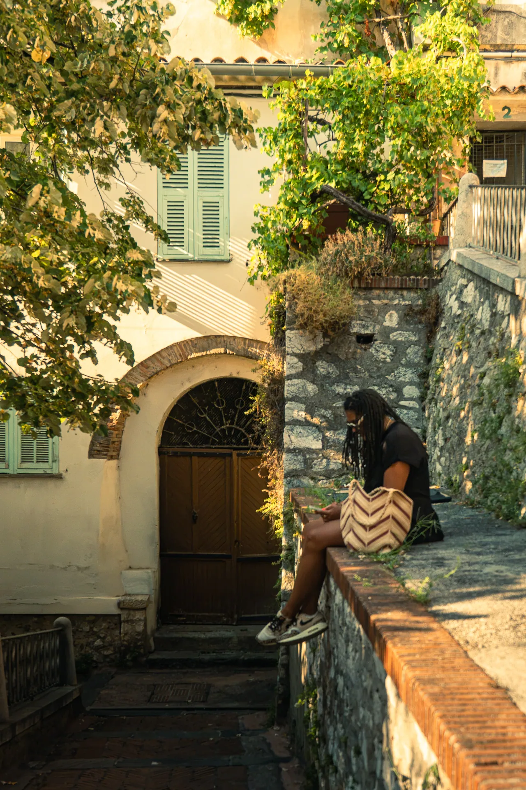
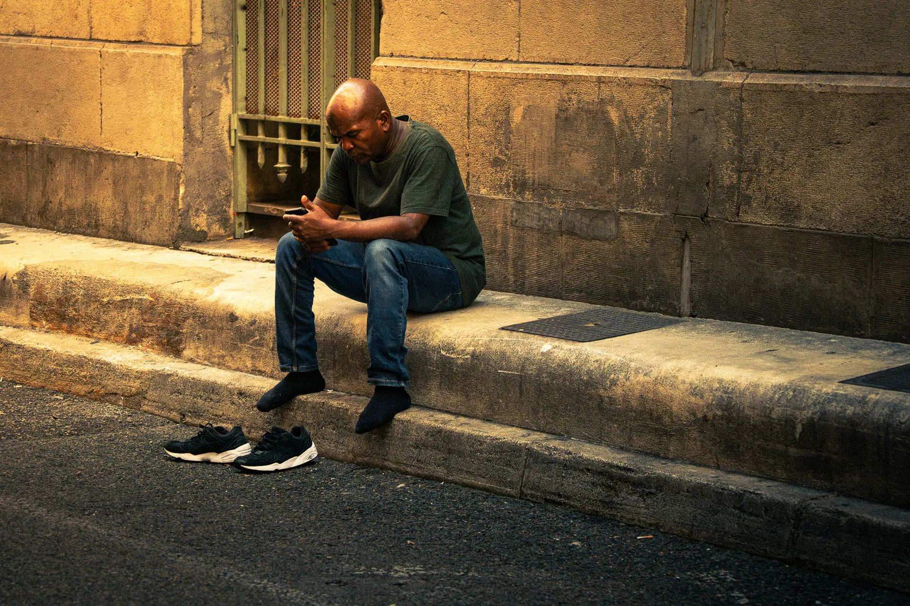
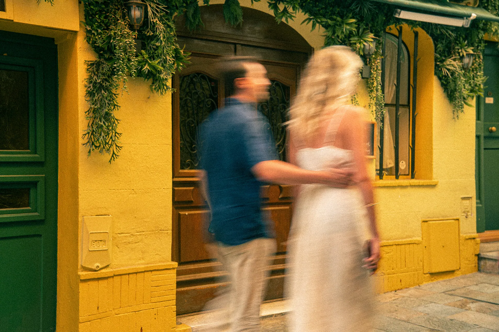
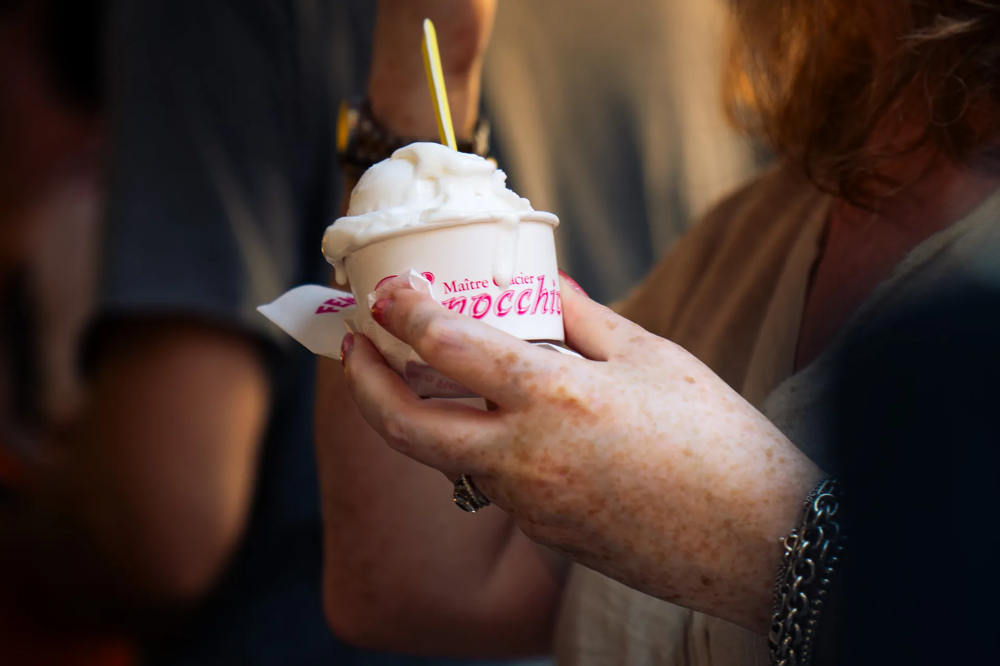
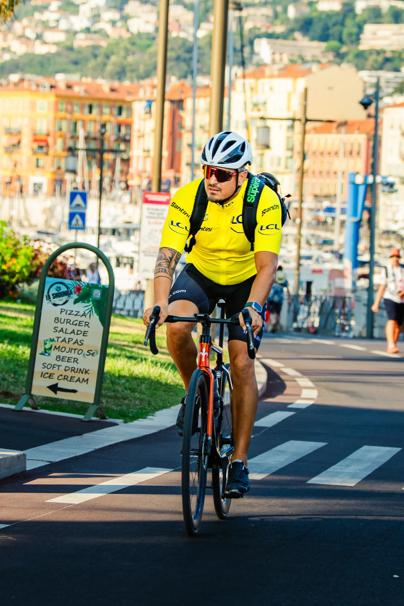
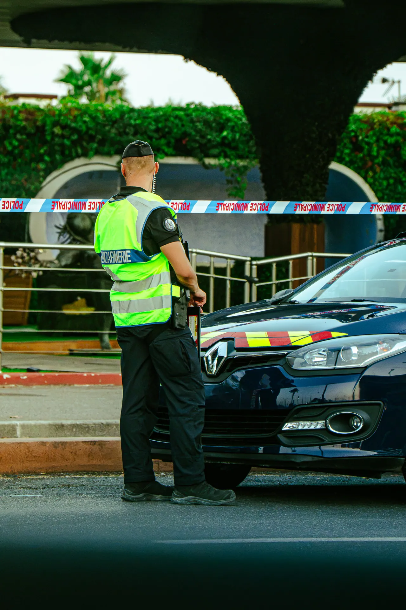
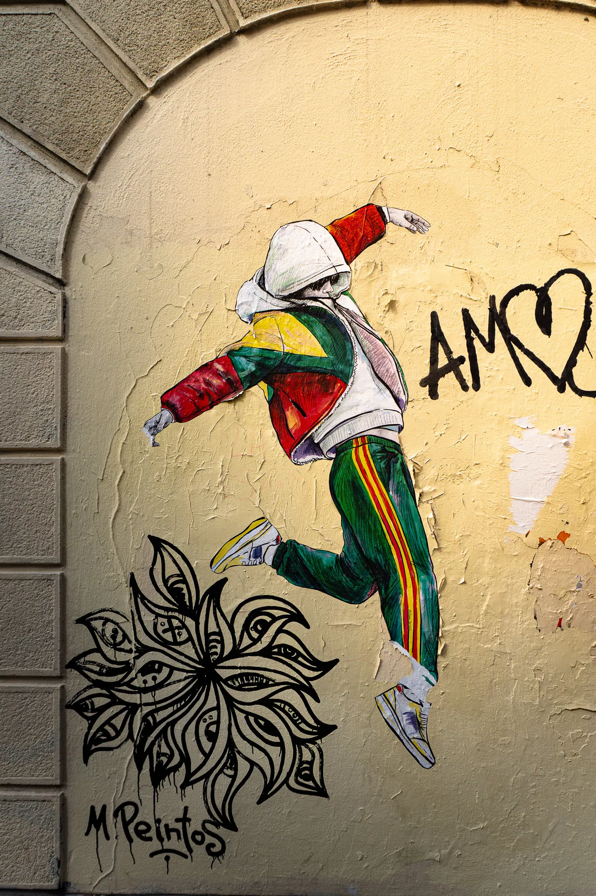
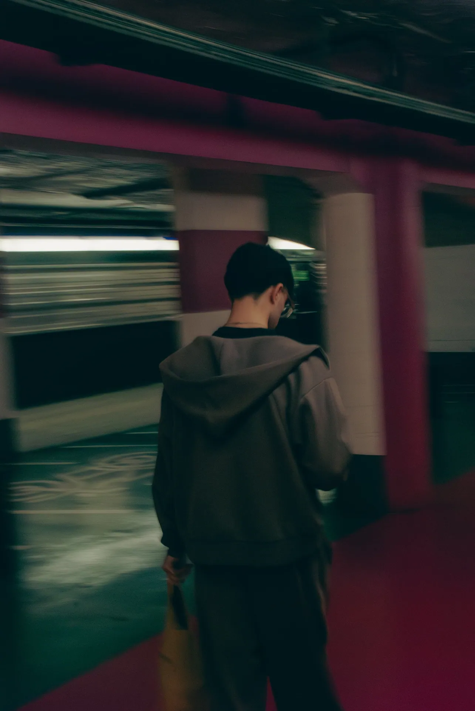
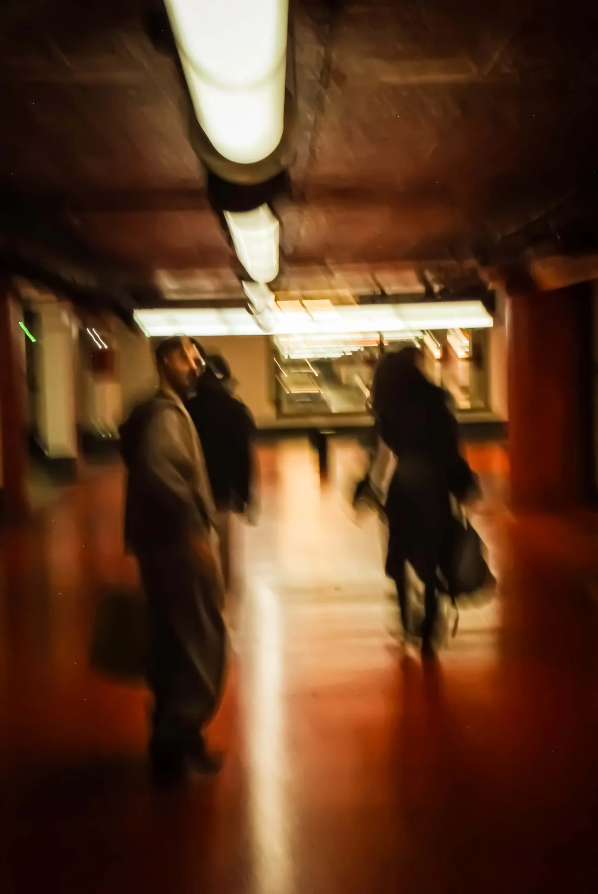
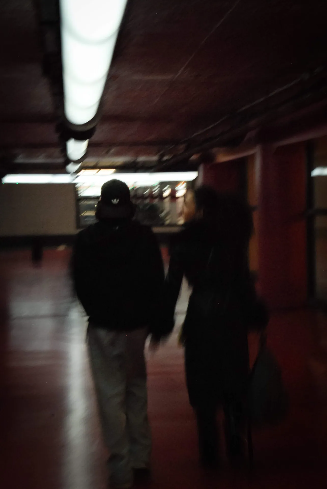
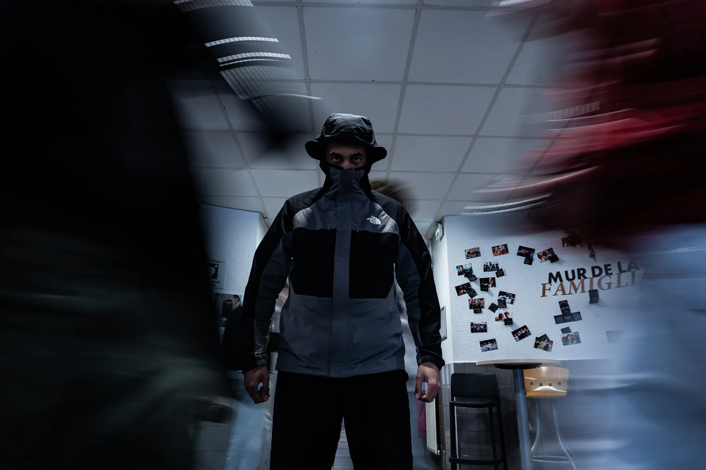
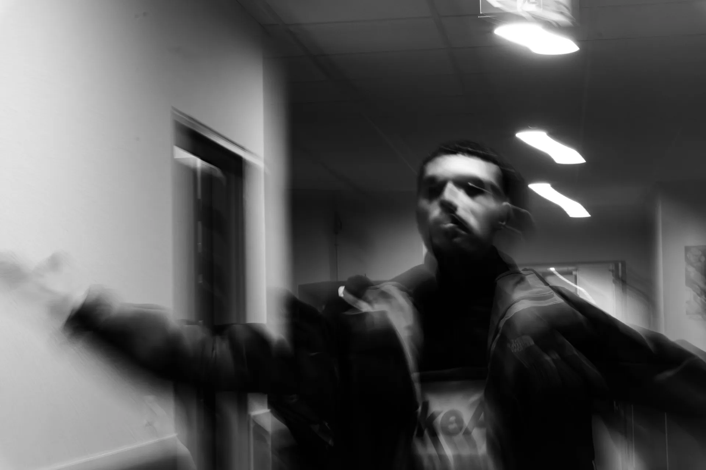
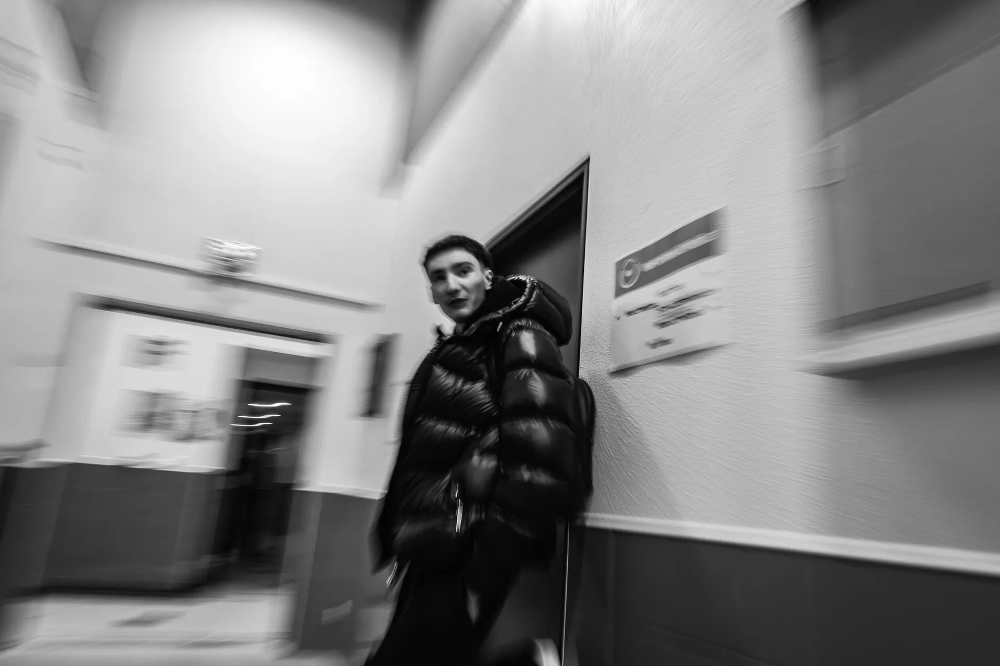
Travaillons ensemble
Un match, un événement, un projet de marque ? Basé près de Lens, je me déplace dans le Pas-de-Calais, le Nord, la Somme et plus loin selon les projets.